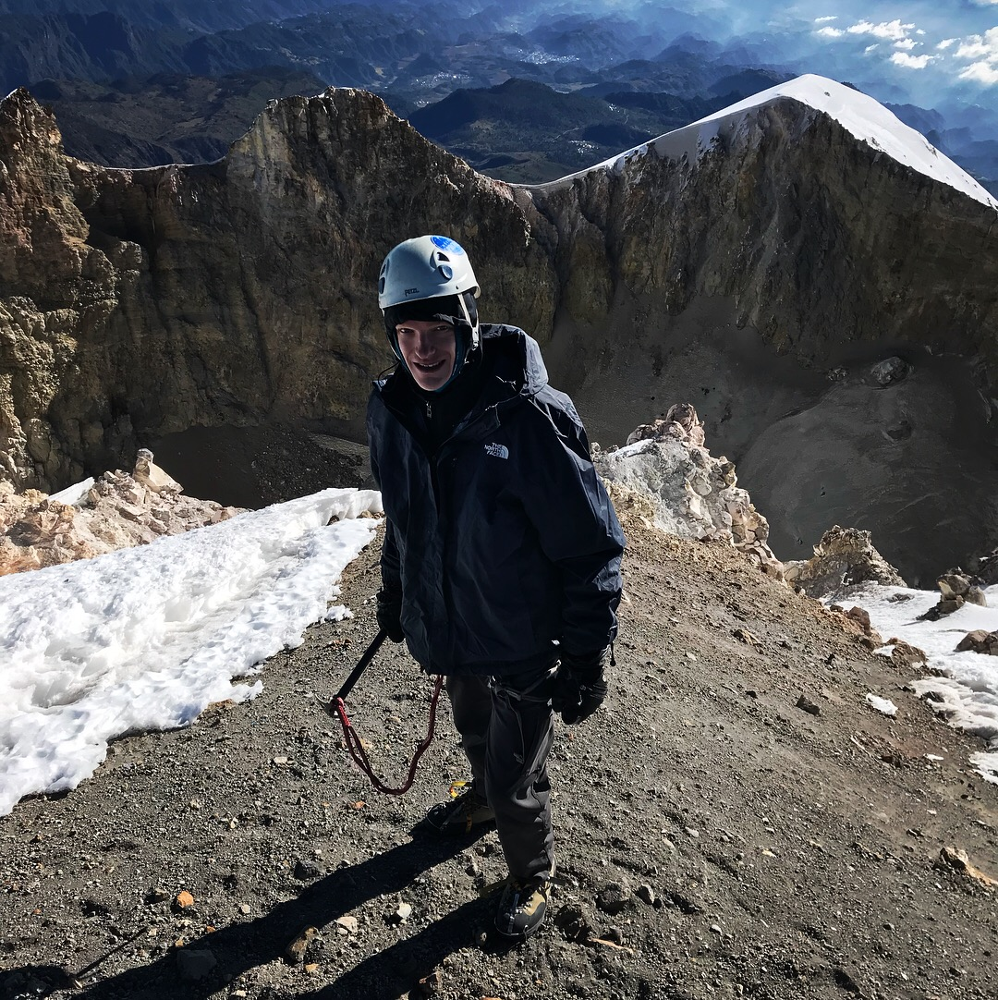
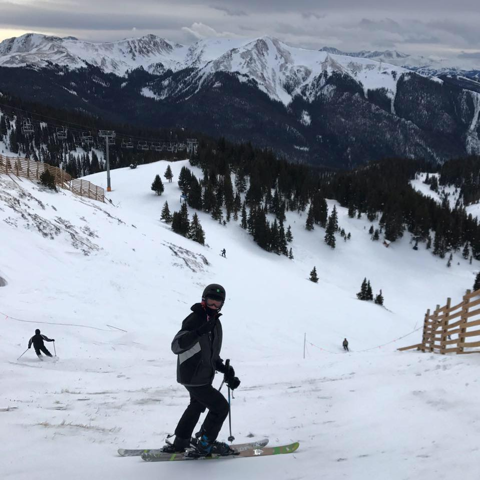

University of Colorado Boulder senior who loves software development.
GPA: 3.17
GPA: 4.3
Some of my interests include climbing mountains, skiing, travel, ice climbing, the Spanish language, and of course climbing mountains.
Pyramid Peak, a 14er in Aspen Colorado. Here is a list of 14ers I have done.
Ice climbing in Ouray, Colorardo
The summit of El Pico de Orizaba, at 18,491ft or 5636m it is the third tallest mountain in North America. Here is a video of the adventure.
Skiing at Arapahoe Basin
Pisa, Italy.